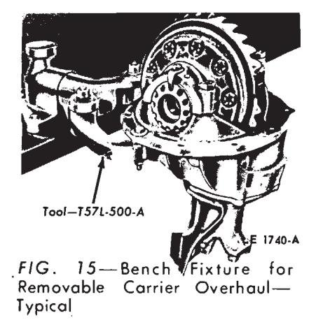
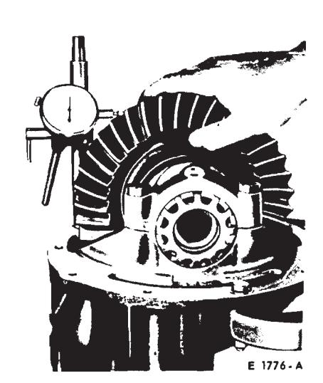
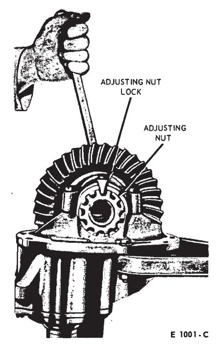
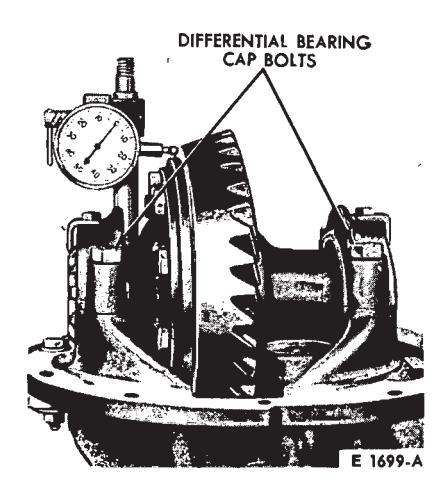

General Driving Axle and Drive Shaft Service · 15-01-10
Inspection Before Disassembly of Carrier (All Axles)
The differential case or carrier should be inspected before any parts are removed from it. These inspections can help to find the cause of the trouble and to determine the corrections needed.
Mount the carrier in the holding fixture shown in Fig. 15. Wipe the lubricant from the internal working parts, and visually inspect the parts for wear or damage.
Rotate the gears to see if there is any roughness which would indicate damaged bearings or chipped gears. Check the gear teeth for scoring or signs of abnormal wear.
Set up a dial indicator (Fig. 16) and check the backlash at several points around the ring gear. Backlash should be within specifications.

Fig. 15 — Bench Fixture for Removable Carrier Overhaul—Typical
If no obvious defect is noted, check the gear tooth contact.
To check the gear tooth contact, paint the gear teeth with the special compound furnished with each service ring gear and pinion. A mixture that is too wet will run and smear. Too dry a mixture cannot be pressed out from between the teeth.

Fig. 16 — Backlash Check—Typical

Fig. 17 — Checking Gear Tooth Contact—Typical

Fig. 18 — Checking Ring Gear Runout—Typical
As shown in Fig. 17, rotate the ring gear (use a box wrench on the ring gear attaching bolts for a lever) five complete revolutions in both directions or until a clear tooth contact pattern is obtained.
Certain types of gear tooth contact patterns on the ring gear indicate incorrect adjustment. Noise caused by incorrect adjustment can often be corrected by readjusting the gears. Acceptable patterns and the necessary corrections are explained under Tooth Contact Pattern Check in Section 1.
Gear tooth runout can sometimes be detected by an erratic pattern on the teeth. However, a dial indicator should be used to measure the runout of the back face of the ring gear as shown in Fig. 18. If this runout exceeds specifications, disassemble the carrier and replace necessary parts as indicated in Part 15-2, Section 4 and Part 15-3. Section 4.
Loosen the differential bearing cap bolts, and then torque them to 25 ftlbs. Remove the adjusting nut locks. Carefully loosen one of the adjusting nuts to determine if any differential bearing preload remains. If any pre-load remains, the differential bearings may be re-used, provided they are not pitted or damaged.
Inspection After Disassembly of Carrier (All Axles)
Thoroughly clean all parts. Synthetic seals must not be cleaned, soaked or washed in cleaning solvents. Always use clean solvent when cleaning bearings. Oil the bearings immediately after cleaning to prevent rusting. Inspect the parts for defects. Clean the inside of the carrier before rebuilding it. When a scored gear set is replaced, the axle housing should be washed thoroughly and steam cleaned. This can only be done effectively if the axle shafts and shaft seals are removed from the housing. Inspect individual parts as outlined below.
Gears
Examine the pinion and ring gear teeth for scoring or excessive wear. Extreme care must be taken not to damage the pilot bearing surface of the pinion.
The pattern taken during disassembly should be helpful in judging if gears can be re-used. Worn gears cannot be rebuilt to correct a noisy condition. Gear scoring is the result of excessive shock loading or the use of an incorrect lubricant. Scored gears cannot be re-used.
Examine the teeth and thrust surfaces of the differential gears. Wear on the hub of the differential gear can cause a chucking noise known as chuckle when the vehicle is driven at low speeds. Wear of splines, thrust surfaces, or thrust washers, can contribute to excessive drive line backlash.
Bearing Cups and Cone and Roller Assemblies
Check bearing cups for rings, scores, galling, or excessively worn wear patterns. Pinion cups must be solidly seated. Check by attempting to insert a 0.0015-inch feeler between these cups and the bottoms of their bores.
When operated in the cups, cone and roller assemblies must turn without roughness. Examine the roller ends for wear. Step-wear on the roller ends indicates the bearings were not preloaded properly, or the rollers were slightly misaligned.
If inspection reveals either a worn cup or a worn cone and roller assembly, both parts should be replaced to avoid early failure.
Differential Bearing Adjusting Nuts
Temporarily install the bearing caps and test the fit of the adjusting nuts in their threads. The nuts should turn easily when the caps are tightened to 25 ft-lbs. The faces of the nuts that contact the bearing cups must be smooth and square. Replace the nuts or examine the threads in the carrier if their fit is not proper. Be sure that the bearing caps and adjusting nuts are on the side they were machined to fit. Observe the punch marks and scribe marks made during disassembly.
U-Joint Flange
Be sure that the ears of the flange have not been damaged in removing the drive shaft or in removing the flange from the axle. The end of the flange that contacts the front pinion bearing inner race as well as the flat surface of the pinion nut counterbore must be smooth. Polish these surfaces if necessary. Roughness aggravates backlash noises and causes wear of the flange and pinion nut with a resultant loss in pinion bearing preload.
Pinion Retainer
Be sure that the pinion bearing cups are seated. Remove any chips or burrs from the mounting flange. Clean the groove for the O-ring seal and all lubricant passages. If the cups were removed, examine the bores carefully. Any nicks or burrs in these bores must be removed to permit proper seating of the cups.
Carrier Housing
Make sure that the differential bearing bores are smooth and the threads are not damaged. Remove any nicks or burrs from the mounting surfaces of the carrier housing.
Differential Case
Make sure that the hubs where the bearings mount are smooth. Carefully examine the differential case bearing shoulders, which may have been damaged when the bearings were removed. The bearing assemblies will fail if they do not seat firmly against the shoulders. Check the fit (free rotation) of the differential side gears in their counterbores. Be sure that the mating surfaces of the two parts of the case are smooth and free from nicks or burrs.
Traction-Lok Differential Parts
Inspect the clutch plates for uneven or extreme wear. The dog-eared clutch plates must be free from burrs, nicks or scratches which could cause excessive or erratic wear to the bonding material of the internally splined clutch plates. The internally splined clutch plates should be inspected for condition of the bond, bonding material, and wear. Replace the bonded plates if their thickness is less than 0.085 inch or if the bonded material is scored or badly worn. Inspect the bonded plate internal teeth for wear. Replace them, if excessive wear is evident. Bonded plates should be replaced as a set only.
Examine all thrust surfaces and hubs for wear. Abnormal wear on these surfaces can contribute to a noisy axle.
Lubricant Level
The lubricant level should be checked every 6000 miles with the vehicle in normal curb attitude. The lubricant level should be at the lower edge of the filler plug hole with the following exceptions: The WER axle lubricant level should be 1/2 inch below the lower edge of the filler plug hole and the 7 1/4 inch ring gear axle lubricant level should be 1/4 inch below the lower edge of the filler plug hole. It is unnecessary to periodically drain the axle lubricant. The factory fill should remain in the housing for the life of the vehicle, except when repairs are made. The specified lubricant should be installed when the axle is overhauled.
Special Tools
| Tool Number | Description | Usage | Tool Number | Description | Usage |
|---|---|---|---|---|---|
| T50T-100-A | Impact Slide Hammer | 0 | T68P-4602-AB | Vial | 0 |
| T57L-500-A | Bench Mounted Holding Fixture | 0 | T68P-4602-AC | Magnet | 0 |
| TO OL-1175-AB | Grease Seal Remover (Use with Slide Hammer T50T-100-A) | 0 | T57L-4614-A | Drive Pinion and Drive Pinion Retainer Assembly Support | 0 |
| T00L-1177 | Axle Shaft Oil Seal Replacer | 3 | T00L-4615-G | Drive Pinion Front Bearing | |
| T65F-1177-A | Axle Shaft Oil Seal Replacer | 0 | 1 | Cup-Remover. | 6 |
| T66N-1177-A | Axle Shaft Oil Seal Replacer | 0 | T55P-4616-A | Drive Pinion Bearing Cup | |
| T60K-1177-B | Rear Wheel Bearing Oil Seal | 1 | Remover and Replacer | 1 | |
| Replacer | (2) | T56T-4616-A | Drive Pinion Bearing Cup | ||
| T60K-1225-A | Rear Axle Shaft Bearing | 1. | Replacer Adapters | (2) | |
| Remover and Replacer | (5) | T57L-4616-A | Drive Pinion Bearing Cup | ||
| T00L-1225-DA | Axle Shaft Bearing Remover | 0 | 1 | Remover and Replacer | 3 |
| TO 0L-4000-C | Differential Housing Spreader | 1 | T60K-4616-A | Pinion Bearing Cups | |
| T57L-4067-A | Differential Bearing | 1 | Replacer (Inner and Outer) | 6 | |
| Adjuster Wrench | 0 | T67P-4616-A | Pinion Bearing Cups Replacer | 00 | |
| T60K-4067-A | Differential Bearing | T69P-4621-A | Pinion Bearing Cone Replacer | ||
| Adjuster Nut Wrench | (3) | (Front and Rear) | 0 | ||
| TO OL-4201-C | Differential Backlash and Runout | T57L-4625-A | Drive Pinion Pilot Bearing and Retaining Ring Remover and | ||
| Gauge, With Universal Bracket Dial Indicator and Bracket | 0 | T62F-4625-A | Replacer Drive Pinion Pilot Bearing and | 399 | |
| T59L-4204-A | Locking Differential Torque Check | 3378 | Retaining Ring Remover and Replacer | (5) | |
| T65K-4204-A | Locking Differential Torque Check | (2) (4) | TOOL-4625-AA | Drive Pinion Bearing Cup— | |
| T66L-4204-A | Locking Differential Torque Check | 39 | Rear Remover | 3 | |
| T57L-4220-A | Differential Bearing Assembly Remover | 00 | TO 0 L- 4625-AB | Drive Pinion Bearing Cup— Rear Replacer | 3 |
| T66P-4220-A | Remover—Differential Bearing Assembly | 3 4 | T00L-4625-K | Drive Pinion Pilot Bearing— Remover and Replacer | 3 |
| T57L-4221-A | Differential Side Bearing Cone Replacer | 0 | T00L-4625-L | Drive Pinion Rear Bearing Cup Remover | 9 |
| TO OL-4221-AF | Differential Bearing Cone | T55P-4676-A | Companion Flange Oil Seal Replacer | 9 | |
| Remover—Pilot (Use with TOOL-4221-C) | 0 | T58L-4676-A | Companion Flange Oil Seal Replacer | 0 | |
| T00L-4221-AH | Differential Bearing Cone— | T62F-4676-A | Drive Pinion Oil Seal Replacer | 3 | |
| Remover Conventional Axle | (3) | ||||
| T00L-4221-AJ | Differential Bearing Cone Remover | (3) | T65L-4851-A | Flange (Universal Joint) | |
| T00L-4221-AL | Differential Bearing Cone Remover- | 1 | Axle End Remover | 0 | |
| Pilot (Use With 4221-C) | (3) | T68P-4851-A | Universal Joint-Flange Holder | 0 | |
| T00L-4221-C | Differential Side Bearings Remover | 0 | T00L-4851-K | Universal Joint-Flange Holder | 00 |
| T00L-4222-H | Differential Bearing Cones Replacer | T0 0L-4858-E | Companion Flange and Pinion | ||
| T00L-4222-L | Differential Side Bearing Cones | 1 | Bearing Replacer | 3 | |
| Replacer | (2) | T68P-4946-A | Locking Differential Gauge | ||
| T66L-4234-A | Rear Axle Shaft Assembly | 1 | (Traction-Lok Clutch Pack) | 0 | |
| Remover Adapter (Use with T50T-100-A) | 0 | T69P-2B384-A | Rotor Remover and Installer— | ||
| T68P-4602-A | Pinion Angle Level Gauge | 0 | 1 | Brake Skid Control | |
| T68P-4602-AA | Frame | 0 | |||
| T90P-4067-A | Differential Bearing Adjuster Nut Wrench | 0 | CJ91B | Universal Joint Bearing Replacer | 0 |
| (1) All | Inch Ring Gear |
Ford, Meteor Ford, Mercury, Lincoln Continental, Thunderbird, Continental Mark III Lincoln Continental, Continental Mark III, Thunderbird Falcon, Mustang, Maverick, Montego, Fairlane, Cougar Lincoln Continental
7 1/4 Inch Ring Gear 8 Inch Ring Gear 8.7 Inch Ring Gear 9 Inch Ring Gear 9 3/8 Inch Ring Gear